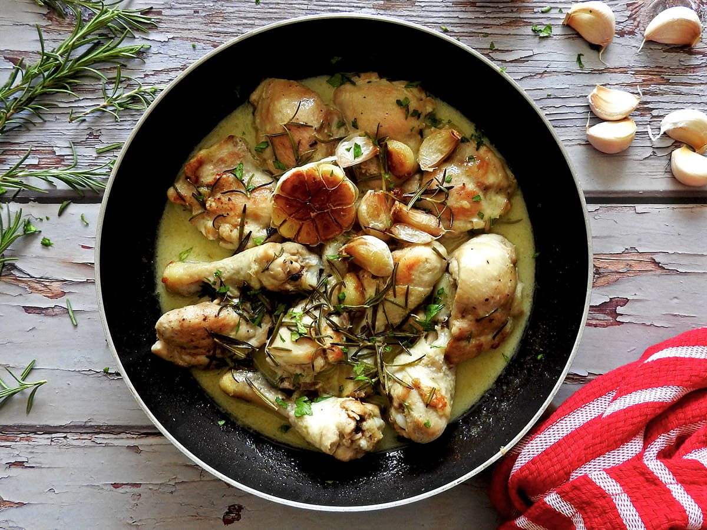

Home
Pollo al Ajillo

Description
Pollo al Ajillo is garlic chicken sautéed in olive oil with white wine and herbs.
It’s rustic, aromatic, and bursting with classic Spanish flavours,
often served with crusty bread to soak up the sauce.
Ingredients
- 1 kg chicken pieces
- 8–10 garlic cloves
- 4 tbsp olive oil
- 100 ml dry white wine
- 1 tsp salt
- ½ tsp black pepper
- 1 tsp paprika
- 1–2 sprigs fresh rosemary or thyme
Steps
- Season the chicken pieces with salt and pepper.
- Heat olive oil in a large pan over medium-high heat and brown the chicken on all sides; remove and set aside.
- Add the garlic to the same pan and sauté until fragrant and golden (but not burnt).
- Return the chicken to the pan and add white wine, paprika, and herbs.
- Cover and simmer on low heat for about 25–30 minutes until the chicken is tender and the sauce thickens slightly.
- Garnish with parsley and serve warm with crusty bread or potatoes.